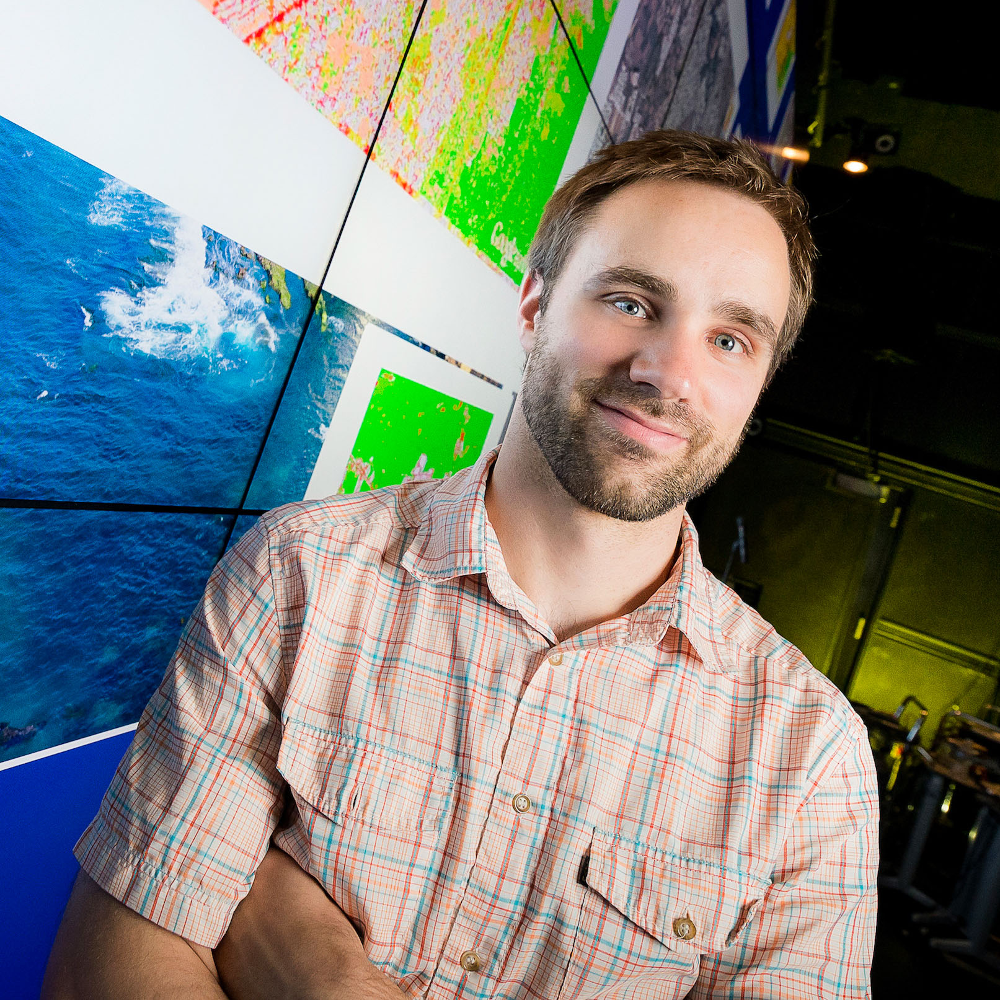

- About
- CV
<!-- # Markdown text goes in here -->
# Michael W. Davidson

I am a PhD student in the <a href="http://polisci.ucsd.edu/">Political Science Department</a> at the <a href="http://www.ucsd.edu/">University of California, San Diego</a>. My research focuses on accountability and representation in developing democracies with an emphasis on campaigns, clientelism and weak parties. I use a diverse set of tools to explore these topics. In my work you'll see me using geospatial, text and network analysis, randomized controlled trials (RCTs) and natural experiments--I consider myself an applied methodologist. I am a member and past organizer of UC, San Diego's <a href="http://hng.ucsd.edu/index.html">Human Nature Group</a>.
I speak fluent Tagalog (Filipino) and have spent more than two years living and conducting research in the Philippines. I have also done field work in India and Thailand. For more detailed information about my academic experience and research, please see my <a href="http://polisci2.ucsd.edu/mwdavidson/cv.pdf">CV</a>.